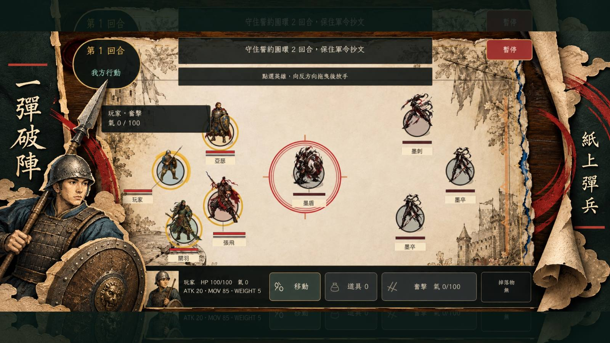
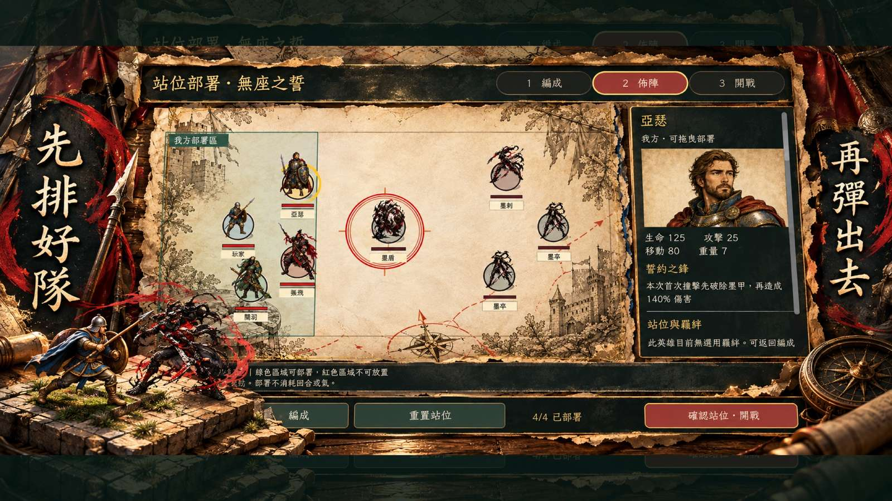
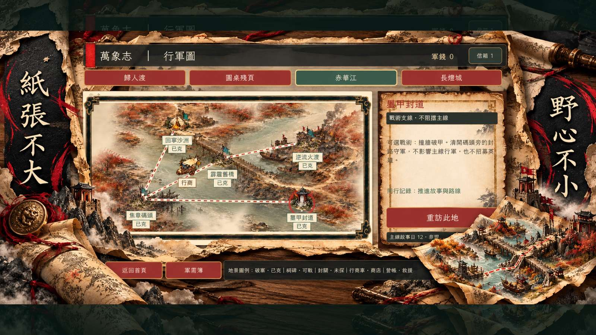
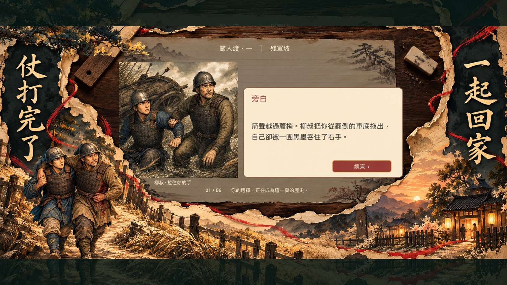

按住英雄，往想前進方向的反面拉開，再放手彈射；拖曳方向和距離決定這一擊的角度與力道。
放手之前，
先想好下一步。
用角度、力道與站位安排這一回合。英雄彈射後會在紙頁戰場移動、碰撞；攻擊與移動共用同一次行動。
英雄的移動能力與重量各有差異。利用碰撞改變戰場位置，讓對手離開有利站位。
依關卡選擇出戰英雄，安排起始位置。輪到我方時，可選擇尚未行動的英雄，調整出手順序。
擊敗主將、殲滅敵軍、佔領目標或護送突破：先讀關卡要求，再決定這回合要進攻還是守住位置。
1. 選擇英雄
我方回合選取尚未行動的英雄，先看敵我站位與本關目標。
2. 反向拖曳
按住英雄往反方向拉，調整瞄準方向與力道。
3. 放手彈射
放手後讓英雄移動與碰撞，觀察結果，再安排下一名英雄的行動。
走過四區，
寫下自己的戰記。
單一路線連接 16 個戰役節點，包含主線、救援與戰術挑戰。沿途調整英雄隊伍，依不同戰場目標決定下一步。
主線推進
跟著章回前進，在紙頁與墨跡構成的戰場迎戰敵將。
救援與戰術
救援節點與不同勝利條件，讓站位和出手順序同樣重要。
隊伍成長
隨戰役解鎖英雄，調整編成，在下一場交鋒試出不同搭配。
紙頁之上，
兵鋒與故事同行。
商店宣傳圖展示戰鬥、部署、行軍與章回故事。圖片保留完整比例，細節可直接開啟查看。



